Issue #79 · reviewed 20 October 2026
Same meeting. Comparable workflows.
Fixture: Project Atlas planning · Alex and Jordan · three transcript turns · two actions · one checklist note. Windows screens use actual WPF/WinForms with synthetic in-memory data.
Evidence provenance: left panels are Mac source-derived hierarchy diagrams, not screenshots or claims about exact rendered geometry. The Mac app cannot run in this Windows environment. Right panels are Windows runtime captures. No Mac code, fonts or artwork were reused. Mac runtime validation remains in #89.
Mac source SHA f5f08c9c7cfb9811efcdb666bf65f9085cadcf6a; Windows baseline ade9975a881b51200fd48b39d17675192dac3252 + #79. See the capability matrix and verification index.
Setup and first run
Mac · source diagram
Hierarchy / interaction only
Source: OnboardingUI/OnboardingView.swift at the pinned SHA.
Windows · actual synthetic preview

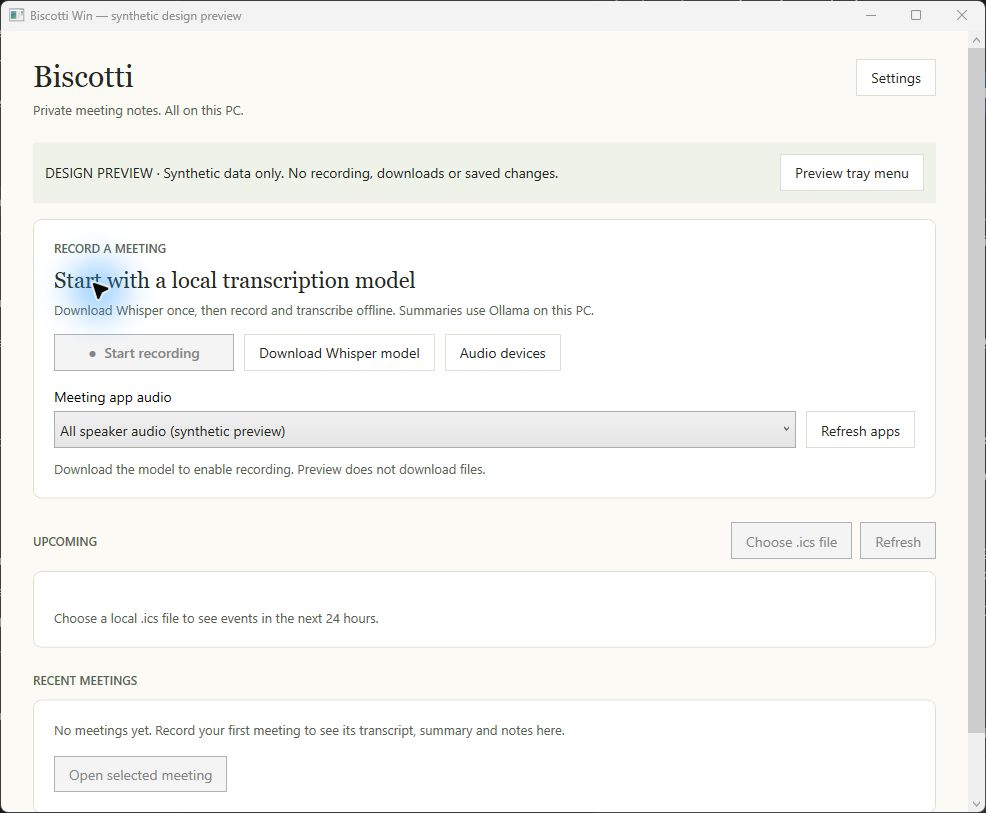
Windows groups model setup with recording and explains Ollama. It uses native Windows permissions rather than replicating Mac TCC prompts. The screenshot shows recording disabled until the model is ready. Missing guided readiness/model preferences: #80.
Home and meeting list
Mac · source diagram
Hierarchy / interaction only
Source: HomeUI/HomeView.swift at the pinned SHA.
Windows · actual synthetic preview

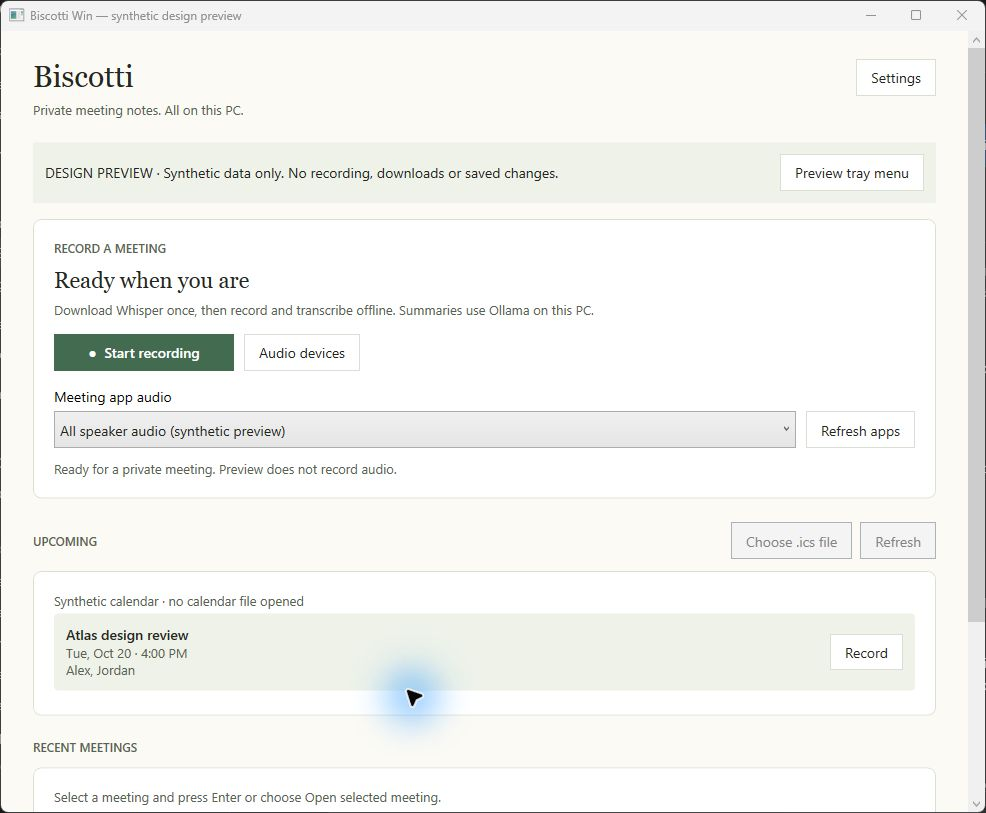

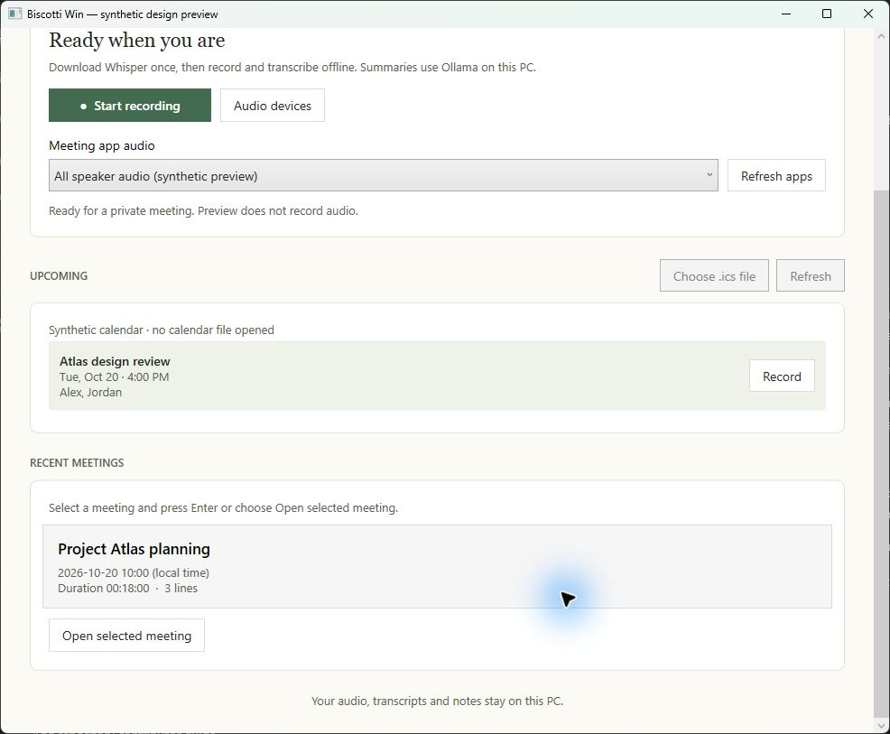
Shared hierarchy: a calm display heading, distinct upcoming/recent sections and readable cards. Windows keeps one scrolling home surface and native selection plus Enter/Open. Mac has richer sidebar/date/search organization; #81/#89 track it.
Recording and processing
Mac · source diagram
Hierarchy / interaction only
Source: RecordingUI/RecordingView.swift at the pinned SHA.
Windows · actual synthetic preview

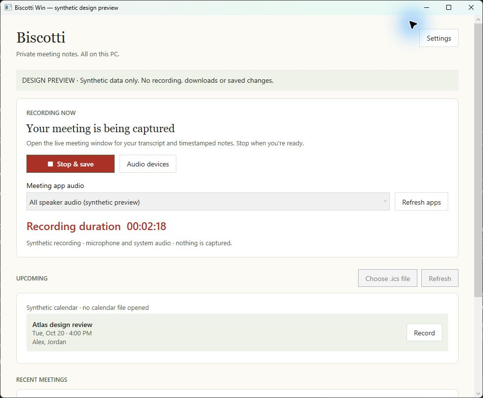

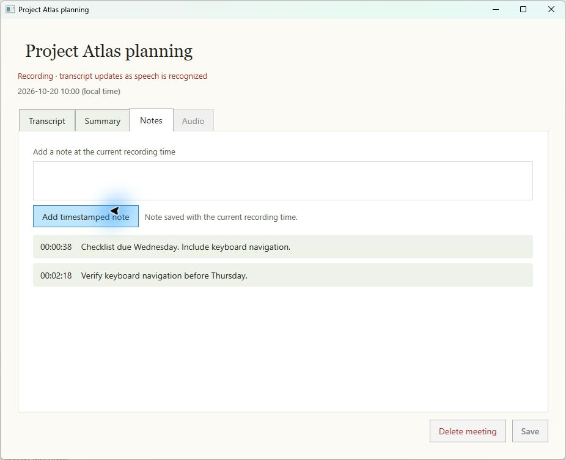

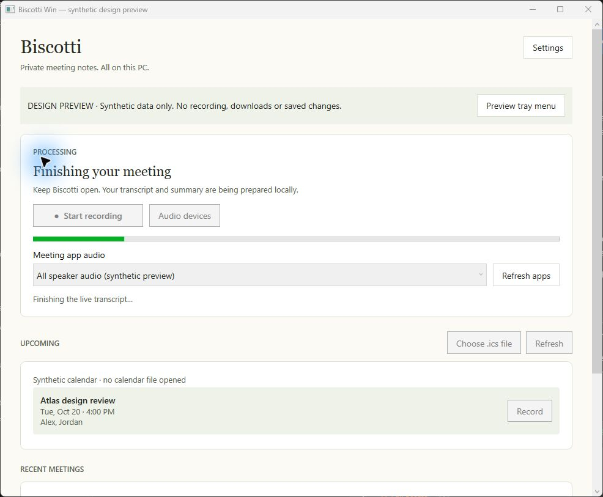
Windows uses a red stop action and visible duration on home, with live transcript/notes in a separate window. The synthetic note was entered and added at 02:18 without capture or storage. Processing has explicit status and disabled start. Mac's single workspace and cancelable countdown remain #86/#89.
Transcript and summary
Mac · source diagram
Hierarchy / interaction only
Source: MeetingDetailUI/MeetingDetailView.swift at the pinned SHA.
Windows · actual synthetic preview

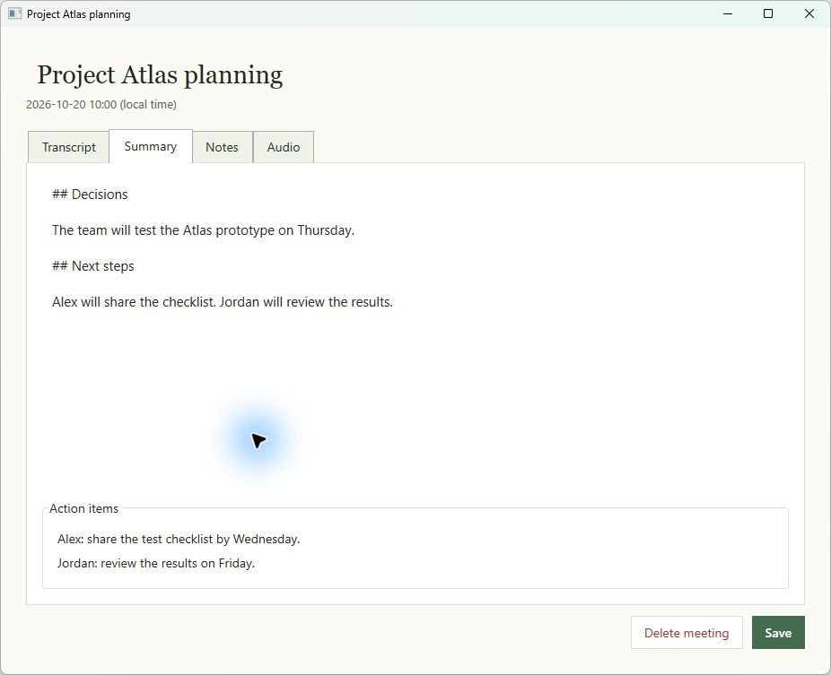

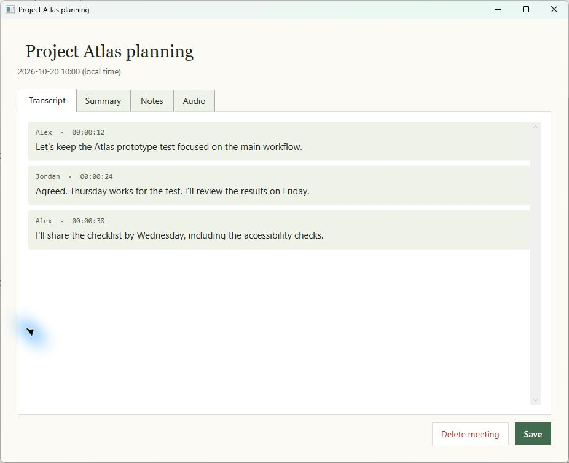
Windows shows speaker/time cards and defaults completed meetings with a summary to Summary; active meetings retain Transcript. Stored actions are visible. Reference-rich Markdown, speaker correction and a persistent transport remain #82/#87/#88; retry/version controls are #84.
Notes and timestamp navigation
Mac · source diagram
Hierarchy / interaction only
Source: Recording/NotesMarkdown.swift at the pinned SHA.
Windows · actual synthetic preview

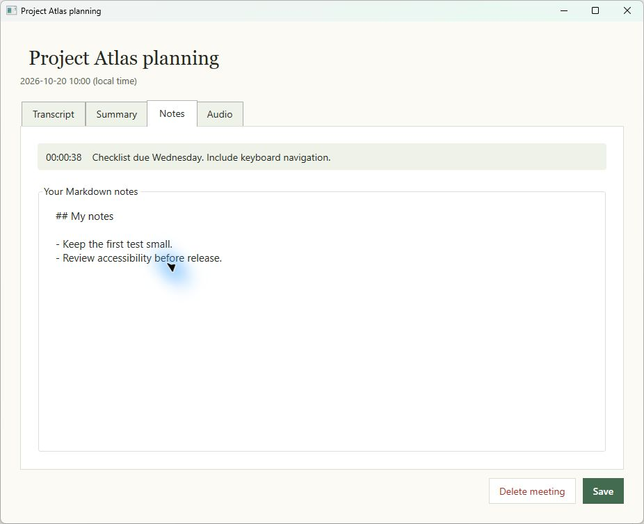
Windows labels the Markdown editor and bounds the timestamp list, leaving room to write. Raw Markdown is retained; current timestamps are text, not seek links. #87/#88 cover rendering, autosave feedback and time navigation. Synthetic content is identical across the diagrams and captures.
Settings and device choices
Mac · source diagram
Hierarchy / interaction only
Source: SettingsUI/SettingsView.swift at the pinned SHA.
Windows · actual synthetic preview

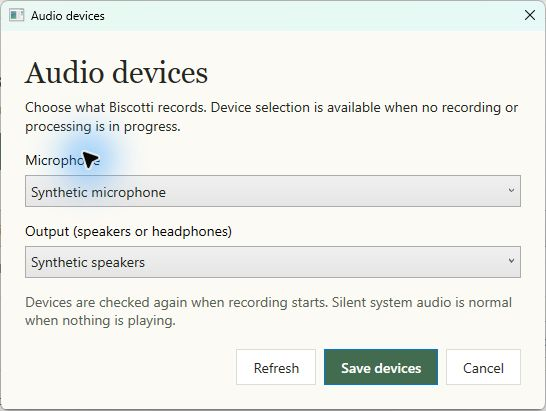

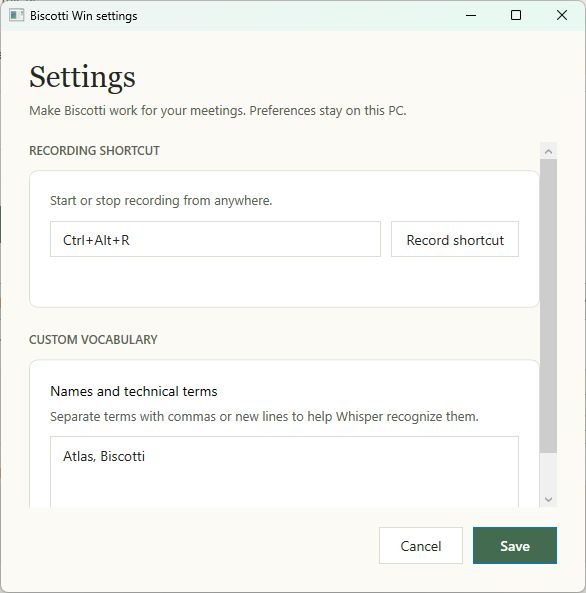
Windows now exposes Settings on home and in the tray, uses shared heading/surface/action styles, and scrolls at small sizes. The current shortcut/vocabulary controls are preserved. Broader local model/calendar/preferences sections remain #80/#85; import/export is #83.
Tray and notification interactions
Mac · source diagram
Hierarchy / interaction only
Source: MenuBarUI/MenuBarContentView.swift at the pinned SHA.
Windows · actual synthetic preview

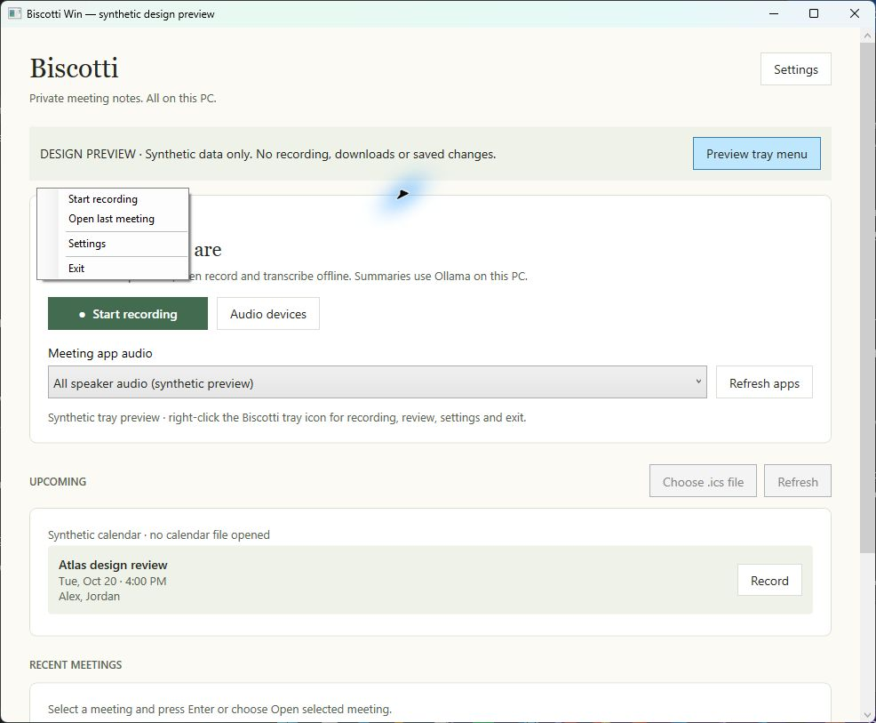
The Windows capture shows the real WinForms tray context menu opened through the isolated preview. Start/stop, open-last, Settings and Exit remain native. No notification is fabricated: production emits summary-ready only. Mac start offers/countdown/expiry are source-backed findings, deferred to #85/#86. Logo artwork remains #53.
Failure and recovery
Mac · source diagram
Hierarchy / interaction only
Source: RecordingUI/RecordingView.swift at the pinned SHA.
Windows · actual synthetic preview

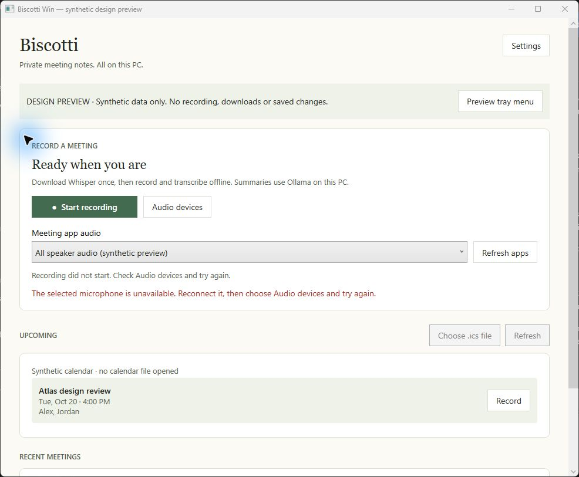
Windows exposes an error reason beside the recording workflow and a distinct history load failure. This combined failure preview is synthetic, not a captured hardware fault. Existing popup repair paths remain; persisted job retry and richer recovery are #84.